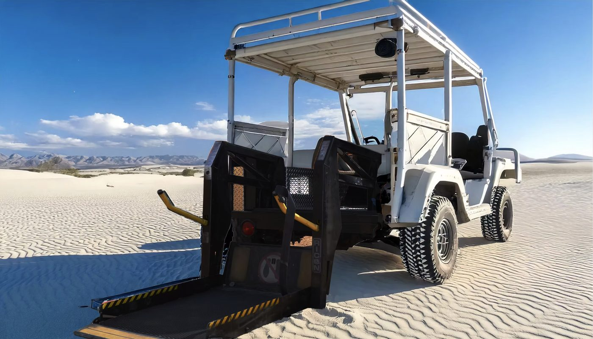
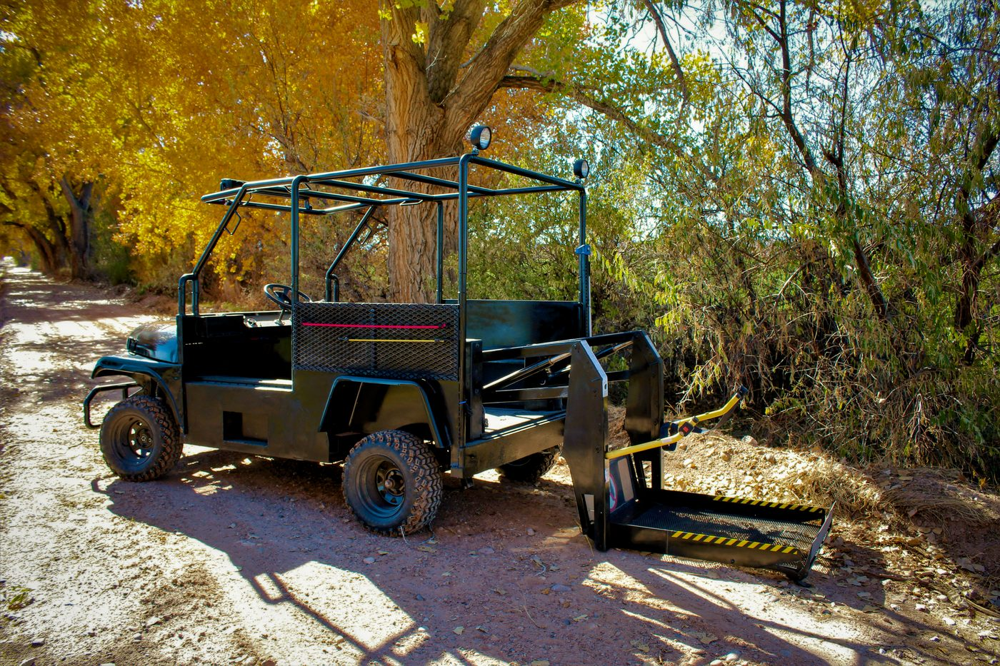

Then to Now
An idea sparked in the '80s turned into a personal commitment that has spanned across decades to make The Enabler a reality.
A green ex-mail Jeep, rebuilt so it could be boarded straight from the curb. Nothing fancy on it. But it worked, and the idea behind it never went away.
Thirty years on, the idea got picked back up and built properly. Rear wheelchair lift, all-electric, driven from the chair. The Buddy Buggy proved it out on hunting trips, farms and ranches.
Back to work after the shop closed for COVID, and back to the frame. All-wheel drive, a self-loading rear lift the driver operates alone, all-steel and built for real work rather than recreation.
The next one starts taking shape. Same chassis and drivetrain, more capacity, a bigger motor, better rear visibility and a roof.
The 2.1 ships to the first customers. Forty years from a green Jeep at the curb.
Through the Years
One idea across three vehicles. Board from the chair, drive it alone, get to work.

